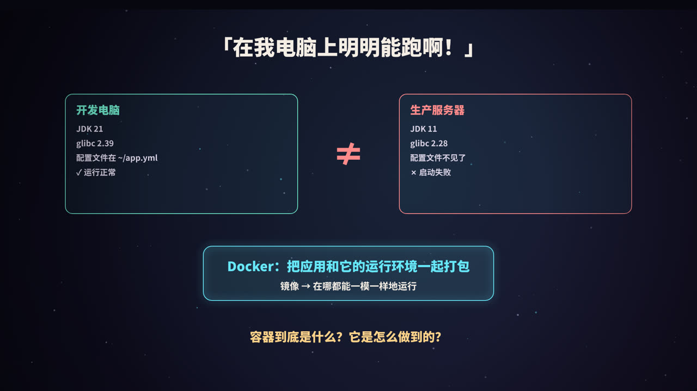
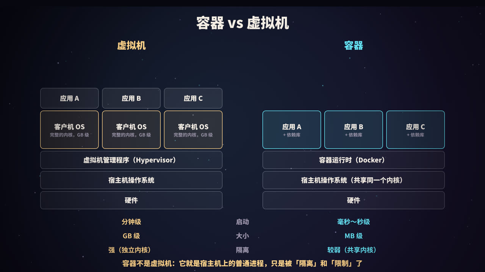
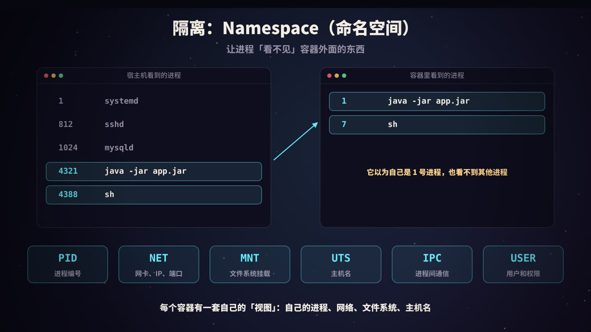
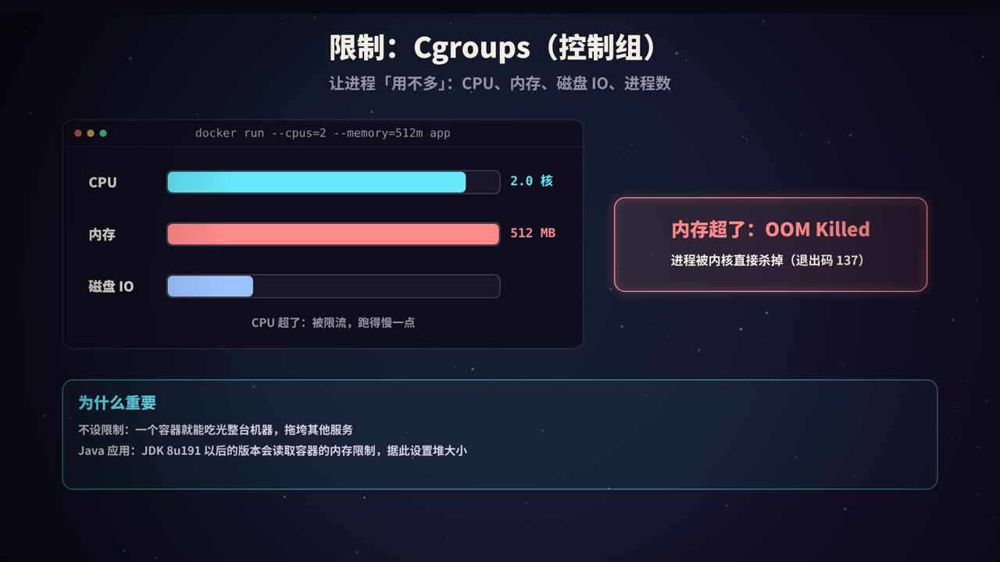
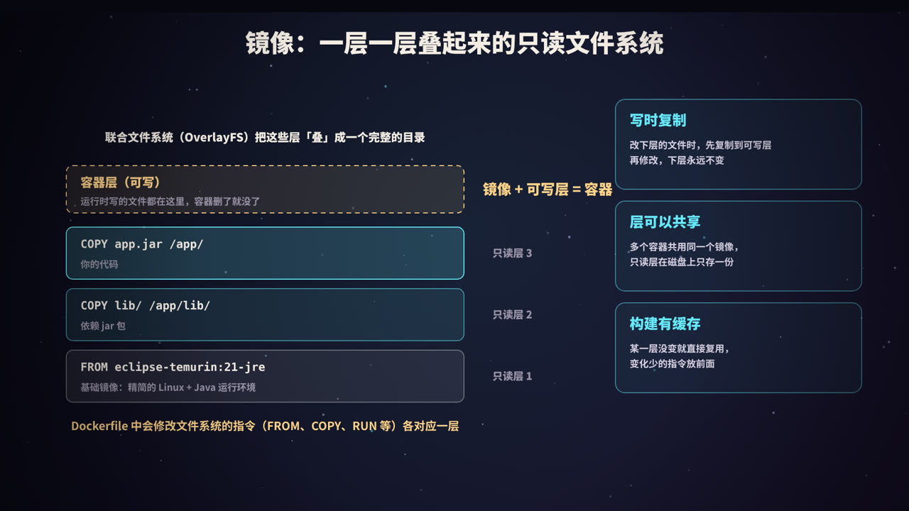
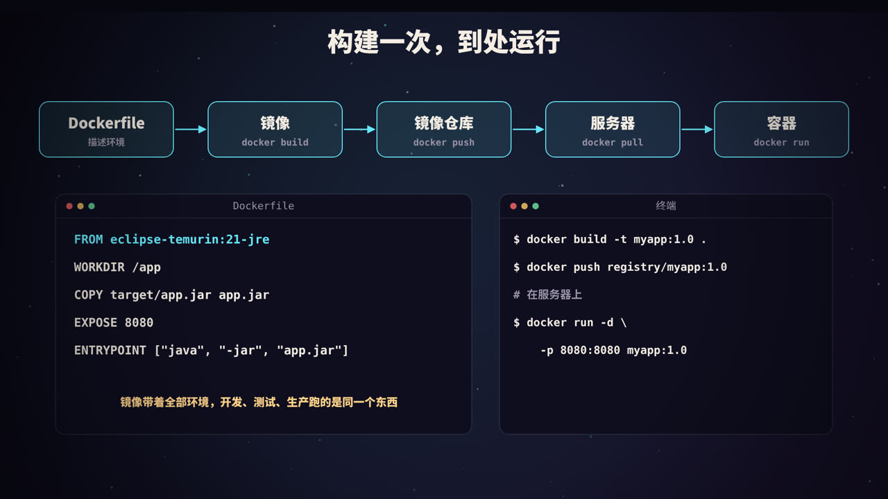
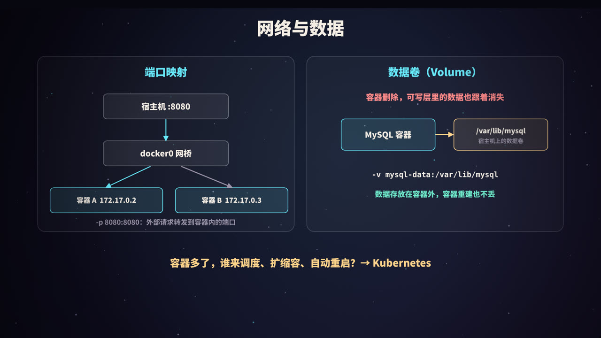
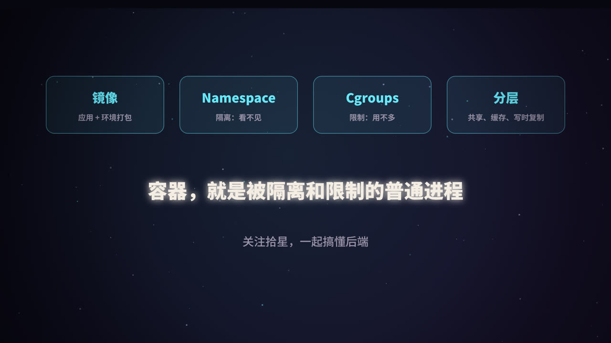

「在我电脑上明明能跑啊」
这句话可能是软件开发里最常听到的一句抱怨。开发电脑上是 JDK 21，服务器上是 JDK 11；本地有某个系统库，服务器上没有；配置文件放在开发者的家目录里，部署时忘了带……应用本身没问题，出问题的是运行环境。
Docker 的思路是：把应用和它依赖的整个运行环境（运行时、系统库、配置、文件）打包成一个镜像。无论在开发电脑、测试环境还是生产服务器上，只要能运行 Docker，就能从同一个镜像启动出一模一样的环境。
那么，用镜像启动的「容器」到底是什么？它是一台小虚拟机吗？答案是：不是。
容器 vs 虚拟机

| 虚拟机 | 容器 | |
|---|---|---|
| 隔离方式 | 虚拟化出整套硬件，每台虚拟机运行自己的操作系统内核 | 所有容器共享宿主机的内核，只是彼此隔离 |
| 启动速度 | 分钟级（要启动一个完整的操作系统） | 毫秒到秒级（就是启动一个进程） |
| 体积 | GB 级 | MB 级（只包含应用和依赖库） |
| 资源开销 | 每台虚拟机都有操作系统的开销 | 几乎和普通进程一样 |
| 隔离强度 | 强 | 较弱，共享内核意味着内核漏洞可能影响所有容器 |
| 跨系统 | 可以在 Linux 上跑 Windows 虚拟机 | Linux 容器需要 Linux 内核（Mac / Windows 上的 Docker 实际在一个 Linux 虚拟机里运行） |
一句话概括：容器就是宿主机上的一个普通进程，只不过 Linux 内核用两项机制对它做了处理：
- Namespace：让它「看不见」容器外面的东西 → 隔离；
- Cgroups：让它「用不多」超出限额的资源 → 限制。
再加上一个精心准备的文件系统（镜像），这个进程就仿佛活在一台独立的机器里。
隔离：Namespace

Linux 的命名空间（Namespace）可以让一组进程拥有某种资源的「独立视图」。Docker 启动容器时，会为它创建一组新的命名空间：
| Namespace | 隔离的内容 | 效果 |
|---|---|---|
| PID | 进程编号 | 容器里的主进程是 1 号进程，看不到宿主机和其他容器的进程 |
| NET | 网络设备、IP、端口、路由表 | 每个容器有自己的网卡和 IP，端口互不冲突 |
| MNT | 文件系统挂载点 | 容器看到的根目录是镜像的内容，而不是宿主机的 |
| UTS | 主机名 | 每个容器可以有自己的主机名 |
| IPC | 进程间通信（共享内存、信号量等） | 容器之间不能通过 IPC 互相干扰 |
| USER | 用户和用户组 | 容器里的 root 可以映射为宿主机上的普通用户 |
在宿主机上用 ps 看，容器里的 Java 进程可能是 4321 号进程；在容器里看，它是 1 号进程，而且只能看到自己和自己创建的子进程。
实验一：不用 Docker，手动造一个「容器」
unshare 命令可以让一个进程在新的命名空间中运行（需要 root 权限）：
echo "== 宿主机 =="
echo "主机名: $(hostname)"
echo "进程数: $(ps -e --no-headers | wc -l)"
echo "网卡: $(awk -F: 'NR>2{printf "%s ", $1}' /proc/net/dev)"
# 新建 PID、挂载、主机名、网络四个命名空间
unshare --pid --fork --mount-proc --uts --net bash -c '
hostname my-container
echo "== 新的命名空间里 =="
echo "主机名: $(hostname)"
echo "网卡: $(awk -F: "NR>2{printf \"%s \", \$1}" /proc/net/dev)"
ps -e -o pid,comm
true
'
echo "== 回到宿主机 =="
echo "主机名: $(hostname)"
输出：
== 宿主机 ==
主机名: vm
进程数: 68
网卡: lo ifb0 ifb1 eth0
== 新的命名空间里 ==
主机名: my-container
网卡: lo
PID COMMAND
1 bash
5 ps
== 回到宿主机 ==
主机名: vm
在新的命名空间里：
- 主机名改成了
my-container，但宿主机的主机名不受影响（UTS）； - 只能看到两个进程，bash 成了 1 号进程（PID）；
- 网卡只剩下一个回环网卡
lo，外面的eth0看不见了（NET）。
Docker 做的事情本质上就是这样，只是它还会切换根文件系统、配置网络、设置资源限制等等。
限制：Cgroups

隔离只解决了「看不见」，但容器里的进程仍然可以吃光整台机器的 CPU 和内存。Cgroups（Control Groups，控制组）用来限制、统计一组进程能使用的资源：
| 资源 | Docker 参数示例 | 超出限制时 |
|---|---|---|
| CPU | --cpus=2 |
被限流（throttle），只是跑得慢一点 |
| 内存 | --memory=512m |
触发 OOM，进程被内核直接杀掉 |
| 磁盘 IO | --device-read-bps 等 |
被限速 |
| 进程数 | --pids-limit=100 |
无法创建新进程，防止 fork 炸弹 |
注意 CPU 和内存的区别：CPU 是「可压缩」的资源，超了只是变慢；内存是「不可压缩」的，超了只能杀进程。容器因内存超限被杀时，退出码通常是 137（128 + 9，即被 SIGKILL 信号杀死），docker inspect 中会显示 OOMKilled: true。
实验二：用 cgroup 限制内存
下面在 cgroup v1 的系统上，手动创建一个限制为 64 MB 的内存控制组，把进程放进去，然后不断申请内存（cgroup v2 的系统路径和文件名略有不同，比如 memory.max）：
# 创建一个控制组，限制内存 64 MB
mkdir -p /sys/fs/cgroup/memory/demo
echo $((64*1024*1024)) > /sys/fs/cgroup/memory/demo/memory.limit_in_bytes
# 把当前 shell 放进控制组，再启动一个不断申请内存的 Python 进程
bash -c 'echo $$ > /sys/fs/cgroup/memory/demo/cgroup.procs; exec python3 -c "
b = []
for i in range(1, 20):
b.append(bytearray(10 * 1024 * 1024))
print(f\"已分配 {i*10} MB\", flush=True)
"'
echo "退出码: $?"
输出：
已分配 10 MB
已分配 20 MB
已分配 30 MB
已分配 40 MB
已分配 50 MB
已分配 60 MB
... Killed ...
退出码: 137
进程在接近 64 MB 时被内核杀掉，退出码 137，和容器 OOM 时的表现完全一样。
对 Java 应用的影响
早期的 JVM 不知道自己运行在容器里，会按照宿主机的内存来计算默认堆大小。比如宿主机有 64 GB 内存，JVM 默认堆最大约 16 GB，而容器只给了 2 GB，结果堆还没用满，容器就被 OOM 杀掉了。
JDK 10 引入、并向后移植到 JDK 8u191 的容器支持解决了这个问题：JVM 会读取 cgroup 的限制。实践中建议：
- 用
-XX:MaxRAMPercentage=75.0按容器内存的百分比设置堆大小，而不是写死-Xmx； - 给堆外内存（元空间、线程栈、直接内存）留出余量，容器内存限制要比堆大小大一些。
不设置资源限制是生产环境的大忌：一个有内存泄漏的容器可以拖垮整台机器上的所有服务。
镜像：一层层叠起来的文件系统

分层
镜像由多个只读层组成。Dockerfile 中会修改文件系统的指令（FROM、COPY、RUN 等）各自产生一层：
FROM eclipse-temurin:21-jre # 基础镜像：精简的 Linux + Java 运行环境（本身也由多层组成）
COPY lib/ /app/lib/ # 一层：依赖的 jar 包
COPY app.jar /app/ # 一层：你的代码
启动容器时，Docker 在所有只读层之上再加一个可写的容器层。容器运行时写入的文件都落在这一层，容器被删除，这一层也随之消失。
联合文件系统与写时复制
联合文件系统（Docker 默认使用 Linux 的 OverlayFS）把这些层「叠」在一起，呈现为一个完整的目录：
- 读文件：从上往下找，找到的第一个版本就是结果；
- 修改下层的文件：先把文件复制到可写层，再修改副本，下层永远不变，这叫写时复制（Copy-on-Write）；
- 删除下层的文件：在可写层放一个「删除标记」（whiteout 文件）把它遮住，下层的文件依然存在。
实验三：亲手叠一次 OverlayFS
mkdir lower1 lower2 upper work merged
echo "来自基础层" > lower1/base.txt
echo "基础层的配置 v1" > lower1/config.txt
echo "来自应用层" > lower2/app.txt
# 两个只读层 + 一个可写层，挂载到 merged
mount -t overlay overlay -o lowerdir=lower2:lower1,upperdir=upper,workdir=work merged
ls merged # 看到三个层合并后的全部文件
echo "容器里改成 v2" > merged/config.txt # 修改下层的文件
echo new > merged/new.txt # 新建文件
rm merged/base.txt # 删除下层的文件
cat lower1/config.txt # 下层的原文件
ls -la upper # 可写层里有什么
umount merged
输出：
app.txt base.txt config.txt
基础层的配置 v1
c--------- 2 root root 0, 0 Oct 10 10:54 base.txt
-rw-r--r-- 1 root root 19 Oct 10 10:54 config.txt
-rw-r--r-- 1 root root 4 Oct 10 10:54 new.txt
merged中同时看到了两个只读层的文件；- 修改
config.txt后，下层的原文件仍然是 v1，修改后的副本出现在可写层（写时复制）； - 删除
base.txt后，可写层里出现了一个特殊的字符设备文件base.txt，这就是 whiteout 删除标记。
这正是容器文件系统的工作方式：镜像层是 lower，容器层是 upper，容器里看到的根目录是 merged。
分层带来的好处
| 好处 | 说明 |
|---|---|
| 共享 | 多个镜像基于同一个基础镜像时，基础层在磁盘上只存一份；同一个镜像启动 100 个容器，只读层也只有一份 |
| 传输快 | 拉取镜像时，本地已有的层直接跳过，只下载变化的层 |
| 构建缓存 | 构建时，如果某条指令及其输入没变，就直接复用缓存的层 |
写好 Dockerfile 的几条经验
- 把变化少的指令放前面：依赖不常变、代码常变，所以先复制依赖再复制代码。否则每次改代码，依赖层的缓存都会失效；
- 选择精简的基础镜像：比如只包含 JRE 的镜像，而不是完整的 JDK 加一堆工具；
- 多阶段构建：在一个阶段里编译，只把编译产物复制到最终镜像，编译工具不进入生产镜像；
- 合并 RUN 指令并清理缓存：在同一个
RUN里安装软件并删除包管理器缓存，否则删除操作发生在新的一层，体积并不会变小； - 不要用 root 运行应用：用
USER指令切换到普通用户； - 不要把密钥写进镜像：镜像的每一层都可以被查看，删掉的文件在下层依然存在。
一个多阶段构建的示例（参考写法）：
# 第一阶段：用 Maven 编译
FROM maven:3.9-eclipse-temurin-21 AS build
WORKDIR /src
COPY pom.xml .
RUN mvn -q dependency:go-offline # 依赖单独一层，pom.xml 不变就走缓存
COPY src ./src
RUN mvn -q package -DskipTests
# 第二阶段：只保留运行需要的东西
FROM eclipse-temurin:21-jre
WORKDIR /app
COPY --from=build /src/target/app.jar app.jar
RUN useradd -r appuser
USER appuser
EXPOSE 8080
ENTRYPOINT ["java", "-XX:MaxRAMPercentage=75.0", "-jar", "app.jar"]
构建一次，到处运行

完整的流程：
- 编写 Dockerfile：描述环境和启动方式；
- 构建镜像：
docker build -t myapp:1.0 .； - 推送到镜像仓库：
docker push registry.example.com/myapp:1.0（Docker Hub、Harbor 或云厂商的镜像仓库）； - 在服务器上拉取：
docker pull registry.example.com/myapp:1.0； - 运行容器：
docker run -d --name myapp -p 8080:8080 --memory=1g myapp:1.0。
常用命令：
| 命令 | 作用 |
|---|---|
docker ps / docker ps -a |
查看运行中 / 全部容器 |
docker logs -f <容器> |
查看容器的标准输出日志 |
docker exec -it <容器> sh |
进入容器执行命令（本质是进入它的命名空间） |
docker stats |
查看容器的 CPU、内存使用（数据来自 cgroups） |
docker inspect <容器> |
查看容器的详细配置和状态 |
docker images / docker history <镜像> |
查看镜像 / 镜像的各层 |
镜像的标签（tag）建议使用明确的版本号或提交哈希，不要在生产环境依赖 latest，否则很难确认线上到底跑的是哪个版本。
Docker 的组成
docker 命令只是一个客户端，它通过 API 调用 Docker 守护进程（dockerd）。dockerd 再调用 containerd 管理容器的生命周期，最终由 runc 这样的底层运行时调用内核接口，创建命名空间和 cgroups，启动容器进程。镜像格式和运行时规范都由 OCI（开放容器倡议）标准化，所以 Docker 构建的镜像也可以被其他容器工具运行。
网络与数据

网络
默认的 bridge 网络模式下：
- Docker 在宿主机上创建一个虚拟网桥
docker0； - 每个容器有自己的网络命名空间，通过一对虚拟网卡（veth pair）连接到网桥上，并分配一个内网 IP（如 172.17.0.2）；
- 外部想访问容器，要做端口映射：
-p 8080:80表示把宿主机的 8080 端口转发到容器的 80 端口（通过 iptables 规则实现）。
其他常见模式：host（直接使用宿主机的网络，没有隔离，性能最好）、none（没有网络）、自定义网络（同一自定义网络中的容器可以通过容器名互相访问，Docker 内置了 DNS）。
数据卷
容器的可写层随容器删除而消失，而且性能不如直接写宿主机磁盘。需要持久化的数据（数据库文件、上传的文件）要放在数据卷里：
# 命名卷：由 Docker 管理存储位置
docker run -d -v mysql-data:/var/lib/mysql mysql:8.4
# 绑定挂载：把宿主机的某个目录挂进容器
docker run -d -v /data/nginx/conf:/etc/nginx/conf.d:ro nginx
这样即使容器被删除重建，数据依然保留在容器之外。
多容器：Docker Compose
一个应用通常需要多个容器配合（应用 + 数据库 + 缓存）。Docker Compose 用一个 YAML 文件描述多个服务，docker compose up 一键启动（参考写法）：
services:
app:
image: myapp:1.0
ports: ["8080:8080"]
environment:
DB_HOST: db # 用服务名访问数据库
depends_on: [db, redis]
db:
image: mysql:8.4
environment:
MYSQL_ROOT_PASSWORD: example
volumes: ["mysql-data:/var/lib/mysql"]
redis:
image: redis:7
volumes:
mysql-data:
当容器数量增长到成百上千、分布在很多台机器上时，就需要 Kubernetes 来负责调度、扩缩容、故障自愈和滚动发布了（见本系列《Kubernetes 入门》）。
常见误区
- 把容器当虚拟机用：在一个容器里塞进应用、数据库、SSH、定时任务……容器的最佳实践是一个容器一个主进程；
- 在容器里改东西：通过
docker exec进去改配置，容器重建后修改全部丢失。环境应该由镜像和启动参数决定，可以随时销毁重建； - 以为容器绝对安全：容器共享内核，隔离强度不如虚拟机。不要用
--privileged运行不信任的镜像，尽量用非 root 用户运行； - 1 号进程的信号问题：容器的主进程是 1 号进程，它要负责处理
docker stop发来的 SIGTERM 信号并回收僵尸进程。如果用 shell 脚本启动应用，要用exec让应用成为 1 号进程，或者用--init参数，否则应用可能收不到停止信号，等超时后被强制杀掉。
高频面试题速答
Q：容器和虚拟机有什么区别？ 虚拟机虚拟化硬件，每台运行独立的操作系统内核；容器共享宿主机内核，本质是被 Namespace 隔离、被 Cgroups 限制的进程。容器更轻、启动更快，但隔离性弱于虚拟机。
Q：Docker 是怎么实现隔离的？ 用 Linux Namespace 隔离进程编号、网络、文件系统挂载、主机名、IPC 和用户；用 Cgroups 限制 CPU、内存、IO 等资源；用联合文件系统提供独立的根文件系统。
Q：镜像为什么要分层？ 层可以在多个镜像和容器之间共享，节省磁盘和传输；构建时未变化的层可以复用缓存。容器在只读层之上加一个可写层，采用写时复制。
Q：容器里的数据怎么持久化？ 使用数据卷或绑定挂载，把数据存放在容器之外。容器的可写层会随容器删除而消失。
Q：容器退出码 137 是什么意思？
进程被 SIGKILL 杀死（128 + 9），最常见的原因是超过内存限制被 OOM Killer 杀掉，也可能是 docker stop 超时后被强制终止。
总结

- Docker 把应用和运行环境一起打包成镜像，解决「在我电脑上能跑」的问题；
- 容器不是虚拟机，而是共享宿主机内核的普通进程；
- Namespace 负责隔离（看不见），Cgroups 负责限制（用不多）；
- 镜像由只读层叠成，容器再加一个可写层，通过 OverlayFS 和写时复制实现，层可以共享和缓存；
- 需要持久化的数据放在数据卷；容器多了交给 Kubernetes。
参考资料
- Docker 文档：Docker overview；Dockerfile reference；Storage drivers（OverlayFS）；Networking overview.
- Linux man-pages：namespaces(7)、cgroups(7)、unshare(1).
- Linux 内核文档：Overlay Filesystem；Control Group v2.
- Open Container Initiative：Runtime Specification；Image Format Specification.
- Merkel, D. (2014). Docker: Lightweight Linux Containers for Consistent Development and Deployment. Linux Journal.
- OpenJDK：JDK-8146115 Improve docker container detection and resource configuration usage.